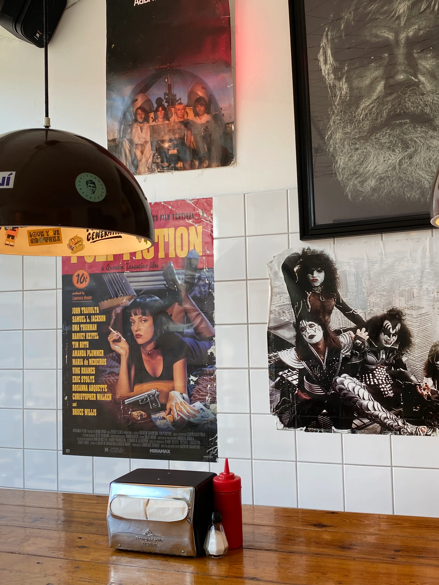
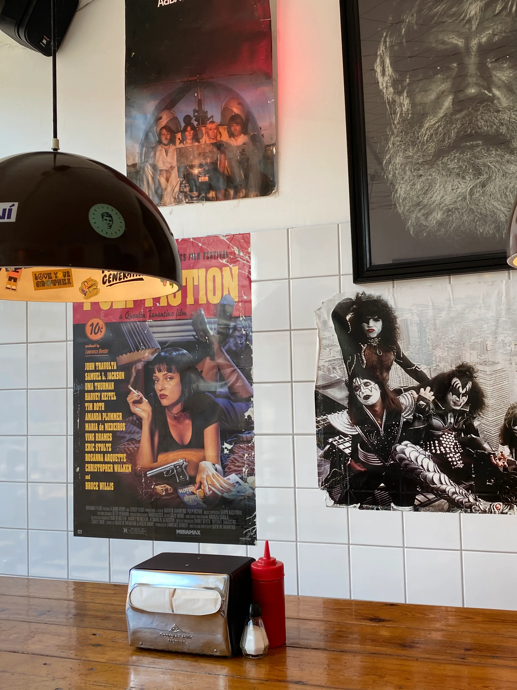
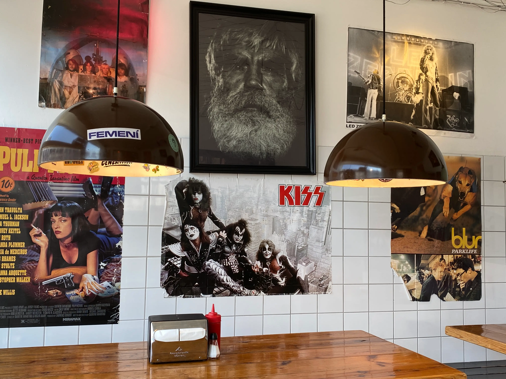
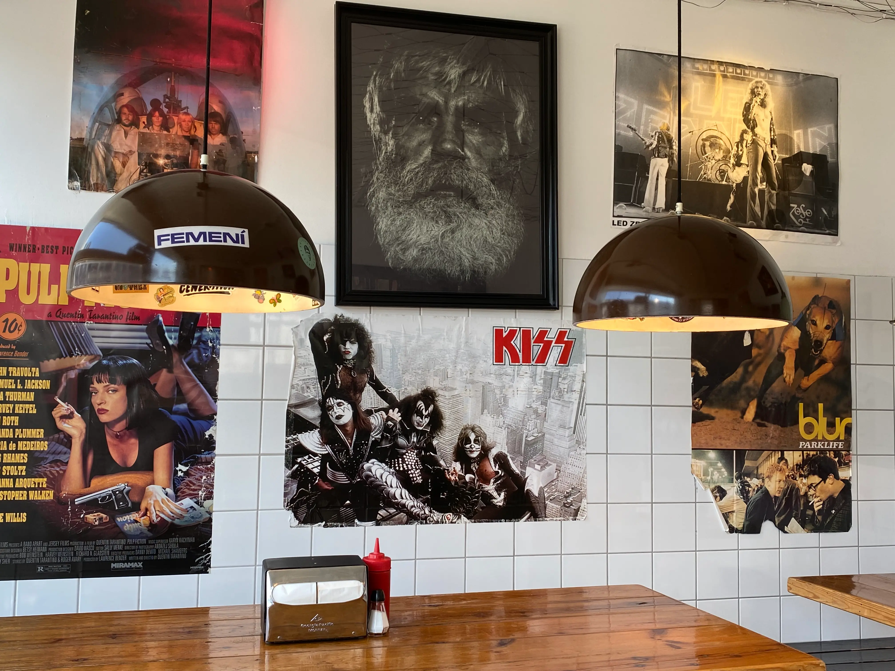

Høkerboderne 21-23
1712 København V
- MONDAY
- TUESDAY
- WEDNESDAY
- THURSDAY
- FRIDAY
- SATURDAY
- SUNDAY
- 11:00-21:00
- 11:00-21:00
- 11:00-21:00
- 11:00-21:00
- 11:00-22:00
- 11:00-22:00
- 11:00-21:00
Our Story
Tommi's Burger Joint, was established in the early months of 2004 and
opened the 10th of April that year by Tómas Tómasson aka Tommi, his
sons Ingvi Týr Tómasson and Tómas Junior along with Örn Hreinsson,
aka Öddi. The first Burger Joint location by the harbor in downtown
Reykjavik was ideal, as it was next to one of the main roads in and
out of downtown. It became very popular. Due to that popularity, a few
more Burger Joints were opened in different parts of the greater
Reykjavík area. Today there are a total of seven Burger Joints in
Iceland and the Tommi's Burger Joint Family spread even further -
London, Berlin, Copenhagen and Rome.

 

 
